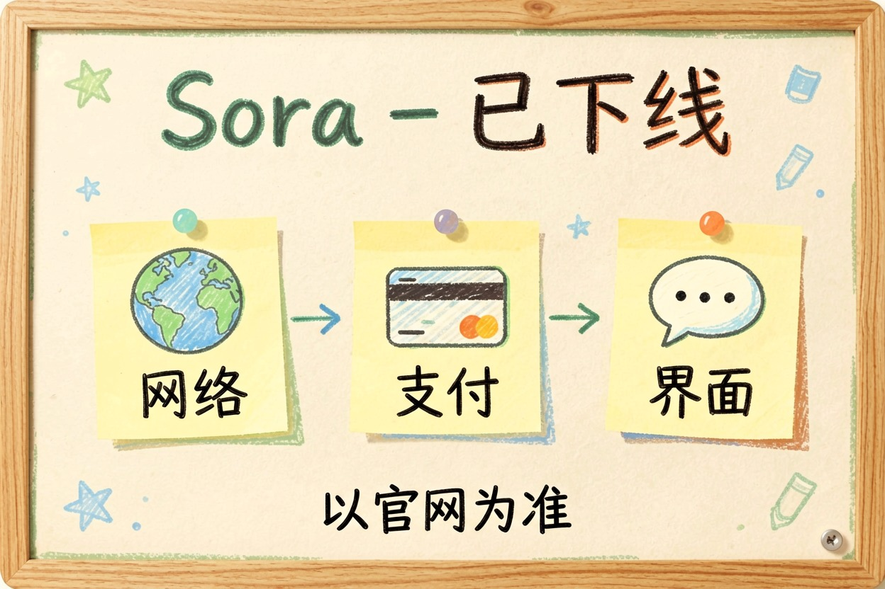
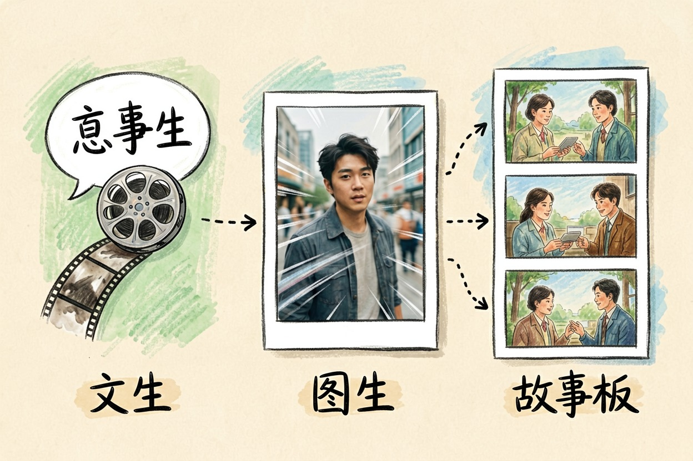
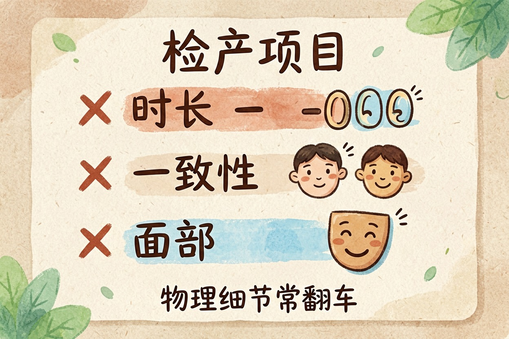
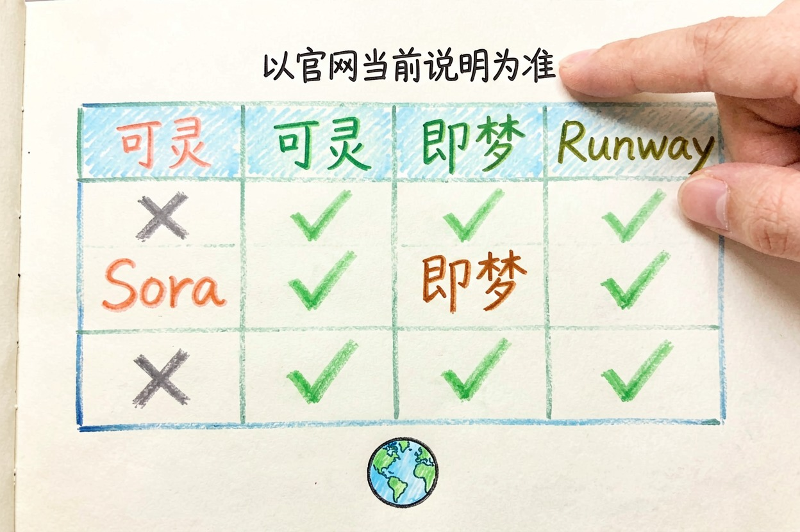

Sora 值得用吗？能做什么不能做什么
Sora 是 OpenAI 的视频生成模型，但官方状态变过多次。用之前先分清「现在能不能用」和「能做什么」，再决定要不要为它花钱。
Sora 视频生成怎么样？先说现在能不能用

Sora 视频生成怎么样，先看官方状态。据 OpenAI 官网显示，Sora 产品已下线，视频生成 API 也进入关闭流程。具体状态，请以 openai.com 当前说明为准。
这是最要紧的事实，比任何功能盘点都重要。问 Sora 视频生成怎么样的人，多半卡在能不能用这一关。先查状态，再看功能。
对中文用户，现实门槛还有三道。访问要额外网络条件，账号要海外支付，语言界面没有本地化。想用它，先把这三关想清楚。
Sora 官方状态速查（以 openai.com 为准）：
产品：已下线，官网明示不再提供
API：sora-2 系列进入弃用流程，临近关闭
入口：官方只有 openai.com，其余「Sora 中文官网」均为仿冒Sora 能做什么：文生视频、图生视频、故事板

抛开可用性谈 Sora 视频生成怎么样，它确实强。核心能力三条：文生视频，给一段文字描述就出画面；图生视频，给首帧图片让它动起来；故事板，把多段镜头串成一个连续叙事。
官方还要求生成内容带 C2PA 标识，方便溯源。这条对做商单的人重要。平台查素材来源时能自证。
文生视频提示词示例：
A cinematic close-up of a ceramic teapot on a wooden table,
steam rising slowly, soft morning light from the left,
shallow depth of field, shot on 35mm, warm color grading.Sora 做不了什么：时长、一致性、真人面部

Sora 视频生成怎么样，短板同样要讲清。时长上，主流生成仍是几秒到十几秒的片段，长叙事不成熟。一致性上，同一人物跨镜头保持长相稳定，目前做不到完美，多段拼接会漂。
物理细节也常翻车。手指、水面、镜面反射，放大看就露馅。真人面部限制严格，用特定人物形象生成内容要过审核。还有一条对中文用户最实际：没有额外网络条件，产品根本连不上。
付费怎么判断：随 ChatGPT 订阅，以官网为准

回到最实际的付费问题：它曾随 ChatGPT Plus 或 Pro 提供，不单独卖。判断机制比数字重要。先确认官网当前是否开放入口，再确认账号地区是否在支持范围，最后才谈价格。具体档位和价格，见 OpenAI 官方 API 文档。
付费这块没人能给你准数，价格档位变动频繁，以 OpenAI 官网当前说明为准。先看官网当前状态再决定掏钱，别为一个可用性不明的产品提前开年付。
和可灵、即梦、Runway 怎么分工
对中文创作者，Sora 视频生成怎么样的答案，更多落在替代方案上。要国内直接可用、中文提示词友好，可灵和即梦的视频生成对比已经帮你比过一轮。要海外项目、电影感风格，Runway 的 AI 视频剪辑功能值得看。
整体选型参考AI 视频生成工具横向对比。后期想接剪辑和字幕，剪映 AI 的剪辑流程能补上后半段。
| 场景 | 推荐 | 理由 |
|---|---|---|
| 中文创意短片 | 可灵 / 即梦 | 国内直连，中文理解好 |
| 海外电影感项目 | Runway | 风格库成熟 |
| Sora 本体 | 暂不推荐 | 产品已下线，入口不明 |
最后提醒一句。别为一个可用性不明的产品提前开年付，也认准 openai.com，别信仿冒站。Sora 视频生成怎么样，以官网当前说明为准，比任何测评都靠谱。
本文信息核对于 2026-08-06。AI 产品的价格、免费额度与功能变动频繁，实际以各工具官网当前说明为准。